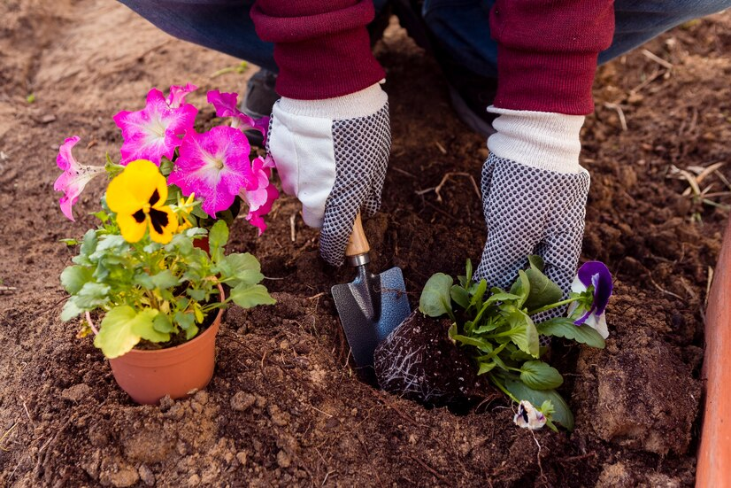
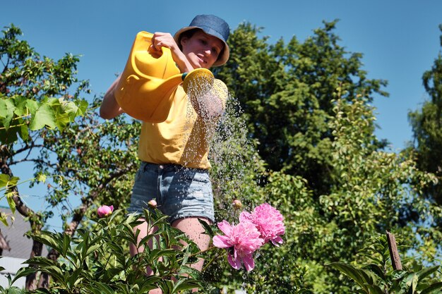

From selecting the right species for your environment to ensuring proper planting techniques,
we create a foundation for long-term tree health, contributing to the overall beauty and
sustainability of your garden.
Flower planting
Our team carefully selects and plants a variety of vibrant flowers,
creating a visually stunning and inviting atmosphere for your outdoor space.


Watering
We expertly manages watering schedules to promote optimal growth. With a tailored approach,
we keep your plants hydrated, healthy, and thriving, ensuring they receive the right amount
of moisture for their specific needs.
Garden Cleaning
We remove debris, weeds, and clutter, ensuring your outdoor sanctuary
remains pristine and inviting. Our thorough cleaning services maintain the beauty of
your garden and provide a refreshed and enjoyable environment for you to relish.
Trimming
Our skilled team ensures the perfect balance, enhancing the aesthetic appeal of your plants and
creating a well-groomed and manicured landscape.